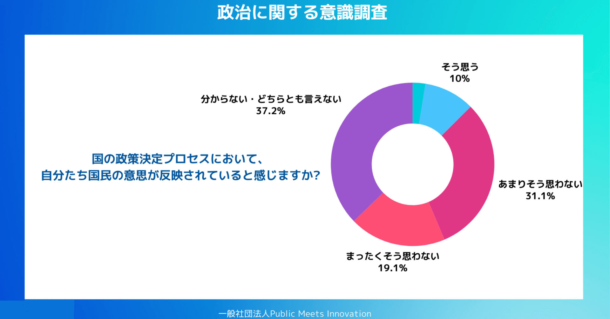
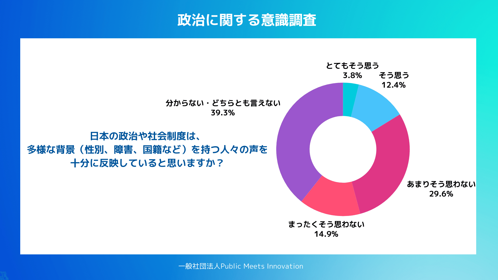
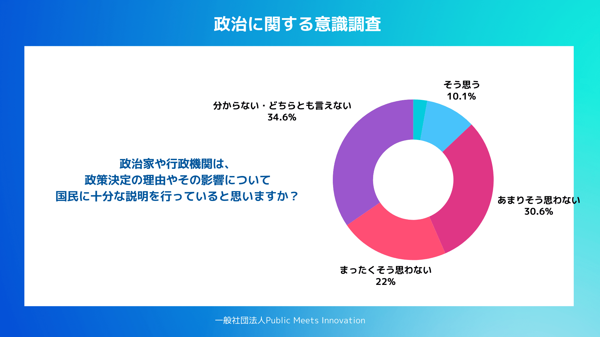
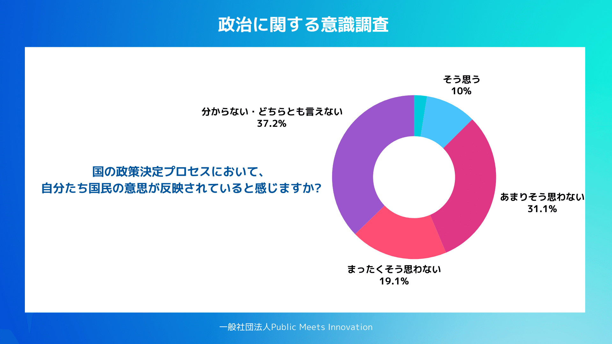
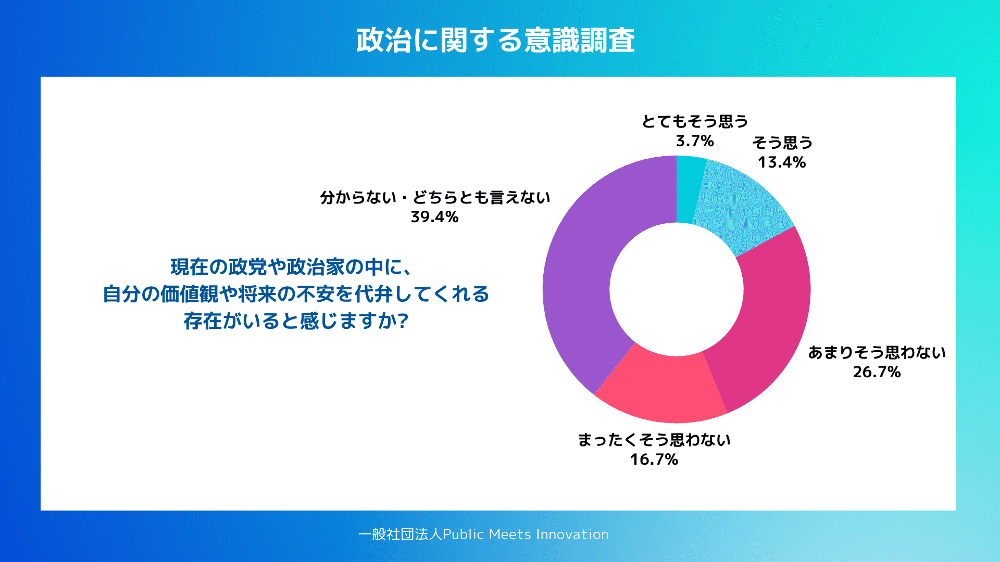
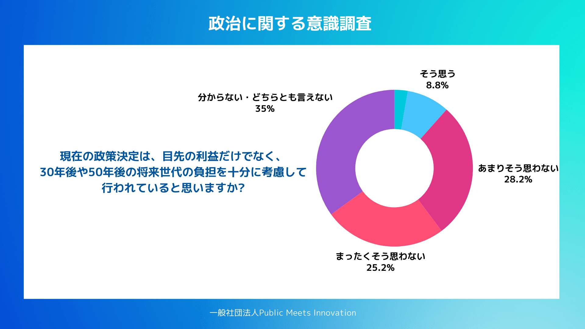

一般社団法人Public Meets Innovationでは、政治意識に関するインターネット調査を行なった。調査期間は、2026年1月9日から1月10日。日本全国の19歳以上の3000人を対象とした。これらのデータに基づくと、2026年1月19日に高市首相が表明した衆議院の解散は、（1）急な解散と、（2）政党再編の2点により、政治不信をより強めることになる可能性がある。
本論考では衆議院選挙に向けた動向と、調査結果を踏まえた分析を行う。
① 国民が自分の声が反映されていない」と感じている中で起きた解散
今回表明された解散の最も大きな問題点は、国民が自らの声が国政に十分に反映されていると感じていない中で行われたという点にある。
PMIが行なった調査では、「日本の政治や社会制度は、多様な背景を持つ人々の声を十分に反映していると思いますか」という質問に対して、政治が多様な人々の声を反映している」と感じている人は 16.2％ にとどまり、 44.5％ が「反映されていない」と感じている。日本社会の半数近くが自らの声が政治や社会制度に反映されていないと感じている状況にあるのである。

2026年1月実施「政治に関する意識調査」より
この前提のもとに、経済や外交、社会制度など、様々に議論されるべき論点が積み上がっている中での冒頭解散がどのように国民に映るのだろうか。日本社会にすでに社会には、 「どうせ声は届いていない」 という前提認識が広がっている。こうした中出の突然の解散は、有権者から見ると、 「意思表示や議論の途中で、判断を遮断された」 ように映りやすい。特に、2026年度予算という生活に直結する論点がある中での解散は、 政治のスケジュールが、生活のスケジュールより優先されたという感覚を強め、既存の不信感を上書きする結果になっていると考えられる。
② 説明不足への不満と「なぜ今なのか」という疑問
今回の解散の問題点はそれだけではない。解散のタイミングもまた問題の1つである。
実際に国民は今の政治をどのように見ているのだろうか。PMIの調査では、「政治家や行政機関は、政策決定の理由や影響について十分に説明していると思いますか」という設問に対し、「政策決定の説明が十分だと思わない」と回答した割合は52.5%と半数を占めた。また、「国の政策決定プロセスにおいて、自分たち国民の意思が反映されていると感じますか？」という設問に対し、50.2%が「国民の意思が政策に反映されていない」と回答した。
これらの数字が示しているのは、政治による国民への説明と、それらに対する納得感の欠如である。

2026年1月実施「政治に関する意識調査」より

2026年1月実施「政治に関する意識調査」より
首相がなぜ、今解散する必要があるのか、何を守るための判断なのか、生活への影響をどう考えているのかを十分に示されなければ、 「理由が分からないまま、大きな判断が下された」 という認識につながりやすい。今回の解散は、新たな不信を生んだというより、 すでに存在していた不信の土壌を刺激した出来事だといえる。
③ 「選んだ意味が消える」連立・再編の繰り返し
政治不信を強める要因のもう1点が政党再編である。政党再編は政策の方向性が同じ政党が1つの党となることによる投票先の一本化などの利点がある一方で、有権者の信託が無効化されるという欠点がある。
PMIが行なった調査で「現在の政党や政治家の中に、自分の価値観や将来の不安を代弁してくれる存在がいると感じますか？」と聞いたところ、「自分の価値観や将来不安を代弁する政党・政治家がいると感じている」と回答した人の割合は 17.1％ にとどまり、 43.4％ が「そう思わない」と回答した。

2026年1月実施「政治に関する意識調査」より
すでに有権者は、政治家が自らの価値観や不安を代弁してくれているという感覚を持てていない。そこに加えて、選挙前には批判していた政党同士の連立価値観が大きく異なる政党の合流選挙後に繰り返される再編が続くと、有権者には 「そもそも投票時に価値観を託したとしても後から勝手に書き換えられてしまう」 と映る可能性がある。これは特定の政党への不満ではなく、 選挙という行為そのものの意味が揺らぐ構造的な問題である。
④ 将来世代への不信と「目先の政治判断」
また、選挙前には実現可能性の有無を問わず様々な政策が各党から訴えられる。しかし、有権者は政党のパフォーマンスを冷ややかに見ている。
PMIの調査で「現在の政策決定は、30年後・50年後の将来世代の負担を十分に考慮して行われていると思いますか？」という質問に、「将来世代への配慮がされていない」と回答した人の割合は53.4％ に上った。

2026年1月実施「政治に関する意識調査」より
これは、議会の解散や政党の連立、政界再編といった動きが、 「選挙をどう乗り切るか」「政権をどう維持するか」といった 短期的な判断に見えるほど、「やはりこの政治は、将来よりも目先を優先している」 という認識が補強されてしまう。その結果、特に若年層を中心に、 「政治は自分の未来の話をしていない」 という距離感が広がっている。
まとめ
本論考では、PMIが行なった最新の調査結果をもとに、衆議院の解散と衆議院議員選挙に向けた現在の政治と社会について分析を行なった。現在の政治意識からは、（1）急な解散と、（2）政界再編という2つの要素がむしろ、政治不信を強める結果となったのではないかということである。
これから政局に限らず、各党が基本姿勢や選挙公約を発表していくことが考えられるが、その政策は誰に向けられているのか、実現可能性あるのか、そして持続可能性は確保されているのか、こうした点も考慮することが各政党には求められているだろう。
2026年1月実施「政治に関する意識調査」はこちらからお問い合わせください。
https://docs.google.com/forms/d/e/1FAIpQLSeVodiqKddO_dAPrdQG9V-MxB1c0pB_AAr5Y64eoCF0CfnpFQ/viewform